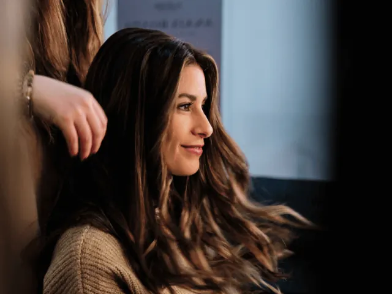
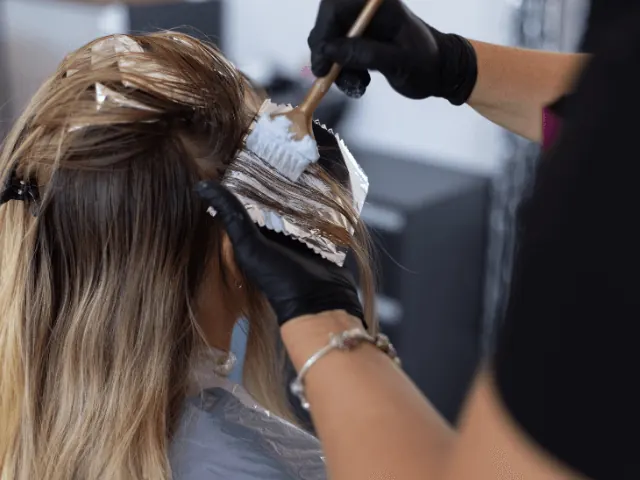

Partnerbijdrage
Haarstyling tips: Schitter met een unieke look!
Gepubliceerd op 24 augustus 2023, bijgewerkt op 26 februari 2024
Onderdeel van de gids Trouwen in Nijmegen en Kappers in Nijmegen

Als er een speciale gelegenheid op de planning staat, wil je er natuurlijk op je allerbest uitzien. En laten we eerlijk zijn, je kapsel speelt een cruciale rol bij het creëren van de perfecte look. Of het nu gaat om een bruiloft, gala of een spetterend feest, de juiste haarstijl kun je hele uitstraling naar een hoger niveau tillen. Dus, lees snel verder, want in deze blog delen we niet alleen handige tips en inspiratie voor haarstyling bij bijzondere gelegenheden, maar we hebben ook een aantal fantastische kappers en haar-goeroes in Nijmegen voor je op een rijtje gezet die je hierbij kunnen helpen.
Ga voor de verbluffende updo
Een updo is de klassieke en elegante haarstijl die perfect is voor formele gelegenheden. Je hebt diverse opties om uit te kiezen, zoals een prachtige knot, een romantische vlecht of een verfijnde Franse twist. Het is belangrijk om een stijl te kiezen die past bij de sfeer en dresscode van de gelegenheid. En om je updo nog specialer te maken, kun je accessoires toevoegen, zoals schitterende haarspelden of een betoverende tiara. Vergeet niet om je haar goed voor te bereiden door het te wassen en te conditioneren voordat je aan de slag gaat. En gebruik voldoende haarspray om ervoor te zorgen dat je updo de hele avond op zijn plek blijft zitten. Want laten we eerlijk zijn, een dansende updo is fantastisch, maar een instortende updo… niet zo geweldig.
Schitter met glamoureuze krullen
Krullend haar straalt een tijdloze schoonheid uit en kan jouw look een glamoureuze touch geven tijdens bijzondere gelegenheden. Je kunt krullen creëren met behulp van een krultang of hot rollers. Begin met het aanbrengen van een hittebeschermend product op je haar en verdeel het vervolgens in secties. Wikkel elke sectie om de krultang of rol ze op met hot rollers en laat ze rustig afkoelen. Zodra je klaar bent, kun je voorzichtig je krullen losmaken en eventueel je vingers gebruiken om ze wat losser te maken voor een zachtere look. Vergeet niet om een fixerende haarspray te gebruiken om je prachtige krullen langer te behouden. Want wie wil er nou niet de hele avond stralen met een weelderige bos krullen?

Laat je vlechten sprankelen
Vlechten zijn veelzijdig en kunnen je kapsel een speelse en romantische uitstraling geven. Er zijn talloze vlechtstijlen die je kunt uitproberen, zoals de klassieke vlecht, de visgraatvlecht of de Franse vlecht. Je kunt ervoor kiezen om je hele haar te vlechten of slechts een deel ervan, afhankelijk van de gewenste look. Vlechten kunnen ook gecombineerd worden met andere haarstijlen, zoals een half opgestoken kapsel of losse krullen. Voeg wat bloemen, haaraccessoires of sprankelende haarspelden toe om jouw vlecht een extra touch te geven. Laat je creativiteit de vrije loop en wees niet bang om te experimenteren. Wie weet ontdek je wel een compleet nieuwe vlechtstijl die jouw kapsel laat schitteren als nooit tevoren!
Accessoires: de kers op de taart
Accessoires kunnen jouw haarstyling voor bijzondere gelegenheden naar een hoger niveau tillen. Denk bijvoorbeeld aan glinsterende haarspelden, haar juwelen of een sprankelende tiara. Deze accessoires voegen een vleugje, glamour en elegantie toe aan elke haarstijl. Kies accessoires die perfect passen bij je outfit en de sfeer van de gelegenheid. En laten we bloemen niet vergeten! Verse bloemen of bloemenkransen kunnen je kapsel een bohemien en romantische uitstraling geven. Durf verschillende accessoires uit te proberen en ontdek welke het beste bij je en de gelegenheid passen. Want laten we eerlijk zijn, een beetje blingbling kan nooit kwaad!

Ontdek de crème de la crème van hairstylists en kapsel-goeroes in Nijmegen
We hebben voor jou een selectie gemaakt van de beste plekken in Nijmegen waar ze als geen ander weten hoe ze je haar in de spotlight moeten zetten.
Van Staveren Hairstyling
Een bezoek aan deze salon voelt als een klein feestje. Hier ben je aan het juiste adres als je op zoek bent naar een feestelijk kapsel. En raad eens? De gratis koffie is niet alleen ontzettend lekker, maar maakt het feest compleet. Bij van Staveren Hairstyling kun je rekenen op uitstekende kapsels, een gezellige sfeer en een goed gesprek. Want zeg nou zelf, wie houdt er niet van om in de watten gelegd te worden, terwijl je haar in de perfecte stijl wordt getransformeerd?
The Hair Hub
Deze salon laat zich inspireren door de laatste trends die op de catwalk verschijnen. Ze zijn dus altijd op de hoogte van de nieuwste trends. En dat zie je terug in de opvallende looks die ze creëren. Dus, als je echt indruk wilt maken met een unieke en trendy haarstijl, dan is The Hair Hub de place to be. Laat je betoveren door hun creativiteit en vakmanschap!
True Hair & Beauty
Deze salon is absoluut bijzonder te noemen. Ze hebben zich gespecialiseerd in kroeshaar en steil haar, en geloof ons, ze kunnen hiermee geweldige dingen doen. Veel klanten komen al sinds hun jeugd naar True Hair & Beauty en nemen nu zelfs hun kinderen mee. En laten we eerlijk zijn, ook kids willen wel eens stralen met een bijzonder kapsel. Deze salon is niet alleen liefdevol voor je haar, maar ook voor jou als persoon. Dus, maak je geen zorgen, je zult met een grote glimlach naar buiten lopen!
Luai Haarstyling
Een ware artiest! Luai Haarstyling wordt zelfs genoemd als een van de beste kappers in Nijmegen. Deze kapper is eerlijk tegen je en zul je vertellen of een bepaalde stijl wel of niet bij je past. Je kunt erop vertrouwen dat je met een stralende glimlach naar buiten stapt, wetende dat je haar er geweldig uitziet. Want laten we eerlijk zijn, een goed kapsel kan iemand laten stralen als nooit tevoren!
Conclusie: straal met je perfecte haarstyling op bijzondere gelegenheden
Met deze tips en inspiratie kun je je haarstyling naar een hoger niveau tillen voor elke speciale gelegenheid. Of je nu kiest voor een elegante updo, glamoureuze krullen, speelse vlechten of sprankelende accessoires, zorg ervoor dat je je haar goed voorbereidt en de juiste producten gebruikt om je look langdurig te behouden. Vergeet niet om te experimenteren en je eigen persoonlijke stijl toe te voegen aan je haarstyling, zodat je straalt op elke speciale gelegenheid. En als je niet helemaal zeker bent van je eigen haarstyling skills, maak je dan geen zorgen. Bezoek gewoon een van onze tip/toplocaties in Nijmegen en laat de experts hun magie op je haar loslaten. Want Hé, iedereen verdient het om er op zijn best uit te zien en te stralen als een ster!
OVERZICHT KAPPERS
BEKIJKKappers en barbers in Nijmegen
Zin om te beginnen? In onze bedrijvengids vind je alle 106 kappers in Nijmegen, met openingstijden, kenmerken en een kaart.
Bekijk alle 106 kappers in Nijmegen
Heb je zelf een kapper? Laat je hier uitlichten.